亚历山大王回应一切：LeCun、Manus，“我的父母都是中国人”
量子位·2026年05月14日 15:12
“研究员来Meta不是为了钱”
加入Meta近一年——也被争议了快一年，亚历山大王（Alexander Wang）首次出来公开回应一切！
去年6月，Meta用140亿美元把亚历山大王从他一手创立的Scale AI带走。
此后将近一年，他几乎销声匿迹——从旧金山搬到南湾，闭门不出，埋头干活。
直到上个月 Meta发布新模型Muse Spark，这也是他加入Meta以来交出的第一份答卷。
在《Core Memory》的最新播客中，这位Meta AI背后的掌舵人，终于在时隔一年后，首次公开发声。
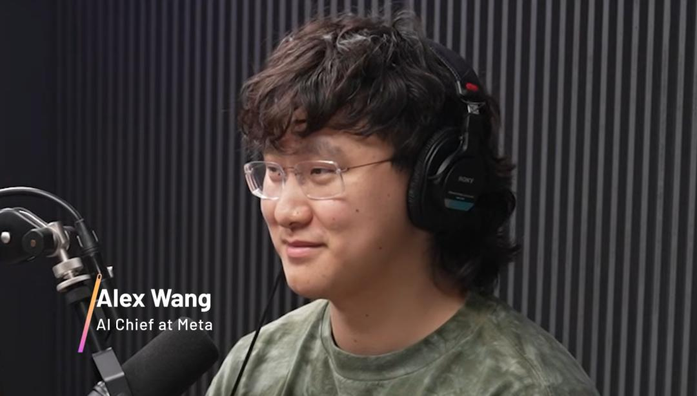
他穿着一件强烈的白尾鹿迷彩衬衫出现在录音室，留着一头鬼马发型，神情轻松。
他聊了Muse Spark背后的技术逻辑、Meta超级智能实验室的内部架构、对AI终局的判断。
除了技术的部分，其中也有不少八卦。
比如他与奥特曼决裂的个人代价，还有小扎亲自煮汤、天价抢人的真相。
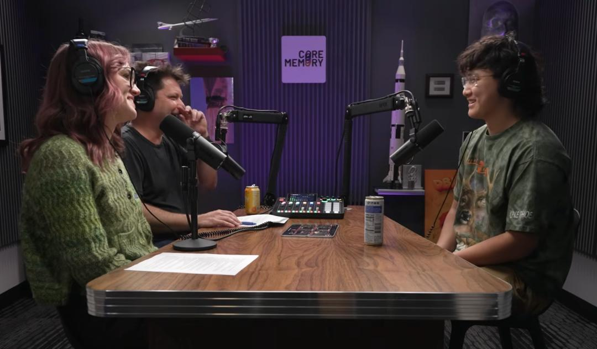
精华提炼在这里（太长不看版）：
Llama 4偏离轨道，是他加入Meta的直接原因；
Muse Spark只是开胃菜，真正让他兴奋的是接下来几个月内即将发布的更大模型；
他认为科技行业正在分层：有算力的公司和没有算力的公司，将活在两个完全不同的世界；
“ChatGPT没赢，Claude Code没封神”——他认为AI终局根本还没开始；
Meta超级智能实验室的三条军规：认真对待超级智能、技术声音最响、科学严谨押大注；
MSI的氛围“像极了早期的OpenAI和Anthropic”，研究员来这里不是为了钱；
Muse Spark触发了安全检查，这是它没有开源的原因；
曾经的室友奥特曼对他没有好话，与LeCun的关系已在X上和解——他说希望行业积怨随着超级智能临近自然消散；
他开始认真思考“模型福利”——AI是否有主观感受，是否值得被善待。
以下是访谈全文。Enjoy。
消失的10个月：从Scale AI创始人到Meta AI负责人
主持人Ashlee：我感觉你们去年完全消失了，跟Nat一起进了某个掩体。现在你带着新模型回来了。
【注】Nat Friedman：前GitHub CEO，现任Meta产品与应用研究（PAR）负责人，是亚历山大王在Scale AI时期的早期天使投资人之一。
Alex：是的，我们有大量的工作要做。
从零开始在九个月内构建一个前沿模型，确实需要大量艰辛的努力。
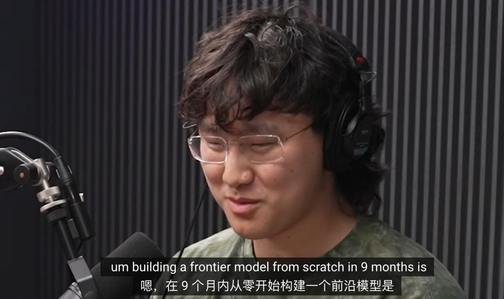
看到大家使用Muse Spark真的很令人振奋，而且我们还有更好的模型在做，所以很令人期待。
主持人Ashlee：你之前住在旧金山，现在搬了吗？
Alex：我搬到南湾了。全力以赴。
对我来说，现在的城市就是帕洛阿尔托——在大学大道散散步，喝杯波霸奶茶。
主持人Ashlee：往大了说，这10个月你经历了彻底的改变——你的公司变了，你去了Meta。
这段经历是什么感受？这笔交易是怎么谈成的？你怎么会去和Zuck谈？
Alex：我认识Mark很多年了。甚至在我还在运营Scale的时候，他就非常慷慨地给了我很多建议。
他显然是一个经验极其丰富的创始人。
大约一年前，我们开始探讨是否有办法更紧密地合作。
那个时候，Mark越来越确信AGI即将到来，知道AI不仅将彻底改变Meta，而且是那种千载难逢的变革性技术。
他非常专注，也知道要在这上面下大注。与此同时，他也公开说过，Llama 4的发展轨迹并不符合公司需要继续押注的要求。
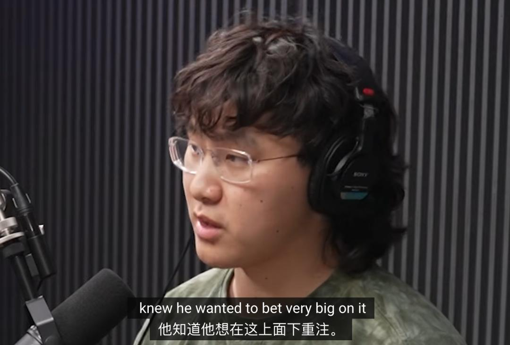
我们在非常高的层面上讨论如何更紧密合作，最后找到了对Scale好、对Meta也好的合作方式。
Mark大约一年前发出了关于“个人超级智能”的备忘录，那就是我们共同的北极星：
用一种赋能人的方式来构建这项技术，让世界上尽可能多的人能够获得它，让它尽可能民主化。
主持人Ashlee：我很早就认识你了，那时候你21岁。
你是最年轻的白手起家亿万富翁，Scale是你身份的一部分。然后去一家有8万名员工的公司担任职位，这是一个很大的转变。
Zuck一定是给了一个相当厉害的说辞。
Alex：是的，非常不同。
整个过程中让我印象最深的有两点：
第一，那些构建AI模型的人，对围绕这些模型能构建的东西，拥有越来越大的话语权——无论是经济上的还是产品上的。
第二，这下一阶段的技术，很大程度上归结于算力。
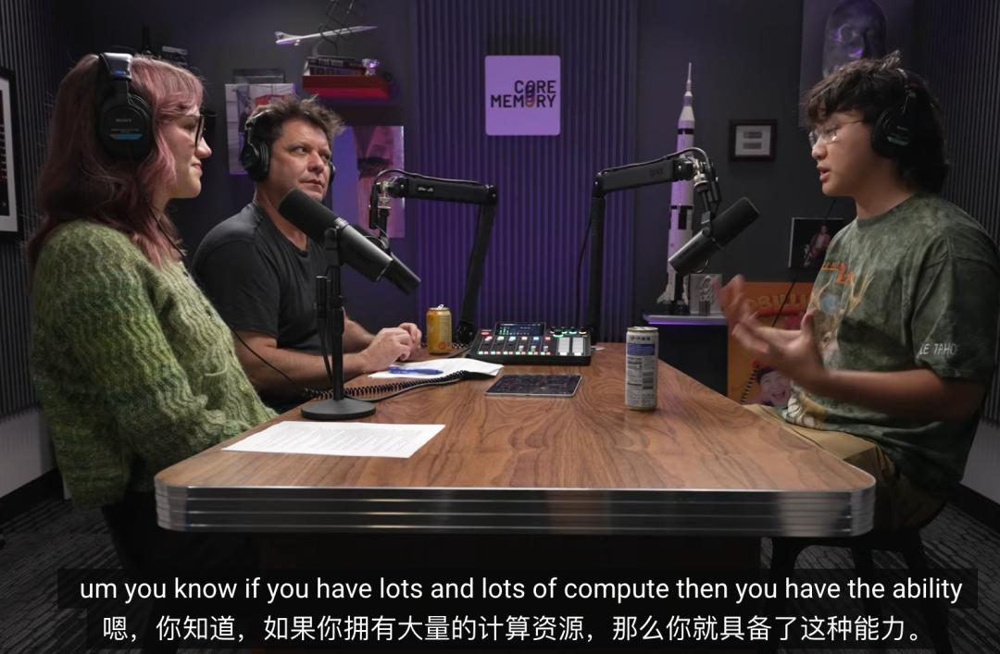
有大量算力的公司和没有算力的公司，能做的事情截然不同，这会造成科技生态的有趣分层。
在Meta这个机会里，Mark非常全力以赴押注AI，是一个非常有魄力的战略家。
同时这创造了一种条件，让我们能够用大量算力来构建，有能力真正对世界产生巨大影响。
Meta超级智能实验室是怎么搭起来的
主持人Ashlee：我认识你、Nat Friedman、Daniel Gross，跟Zuck只见过一两次。
能描述一下你们几个人之间是怎么安排的吗？
【注】Daniel Gross：知名天使投资人，前Y Combinator合伙人，现任Meta算力业务负责人，专注于长期基础设施规划。
Alex：整个部门叫做Meta超级智能实验室（Meta Superintelligence Labs，简称MSL），由我统筹。
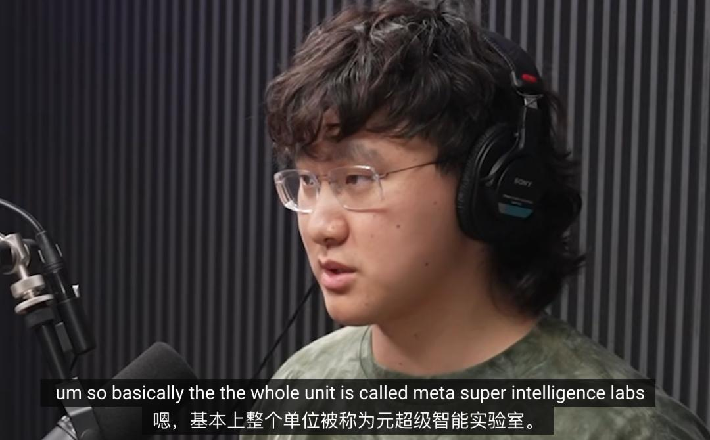
下面有几个板块：
其中有一个叫做TBD的部门，是大型模型研究实验室，有点声名狼藉，但那里汇集了大量顶尖研究人员和基础设施工程师，他们技术上都向我汇报。
还有一个叫“产品与应用研究”（PAR）的部门，由Nat Friedman领导，负责所有产品的构建和模型的实际部署。
在MSL的整体框架下，还有FAIR，继续做探索性研究——比如用AI理解大脑，用 AI 理解计算化学，以及我们构建的原子通用模型（UMA）。
【注】UMA（Universal Model for Atoms）：Meta FAIR构建的原子通用模型，用于模拟分子和材料的物理性质，属于计算化学领域。
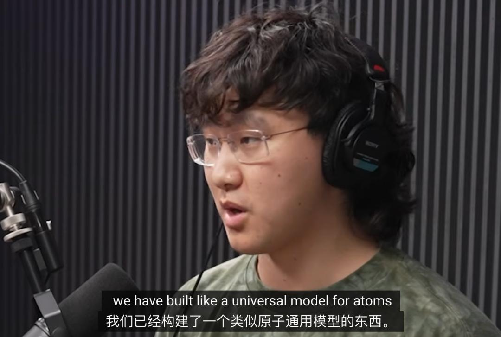
Daniel Gross则主导Meta的算力业务，专注于长期基础设施规划，确保我们能建立起所需的所有GPU和数据中心基础设施。
此外，我们还有首席科学家赵胜佳，他负责统筹整个MSL的科学议程。
【注】赵胜佳（Shengjia Zhao）：Meta超级智能实验室首席科学家，斯坦福大学博士，曾任职 OpenAI。
主持人Ashlee：在进入Meta之前，你最熟悉这个团队里的哪些人？
Alex：我认识Nat和Daniel其实已经很长时间了。
Nat是我在Scale最早的天使投资人之一，在我完成YC之前就投资了Scale，这些年来一直给我建议。
Daniel我也是大约那个时候认识的，非常早期，一直保持联系。
他发现Meta AI最大的问题：缺乏“超级智能信仰”
主持人Ashlee：你刚到Meta的时候，发现了哪些问题？
Alex：当我加入Meta的时候，很明显需要对整个 AI 工作进行重置和重建，让它回到正确的轨道上。
因为Llama 4的发展轨迹并不在同一条线上，我们落后于前沿。
我认为比较根本性的问题是：许多领先的实验室是围绕“超级智能即将到来，而且非常近”这一前提来构建整个组织的。
你需要围绕这个核心信念构建整个实验室的计划和专注点。
所以首先要做的，就是认真对待超级智能，然后开始围绕这个核心前提重建所有其他假设。
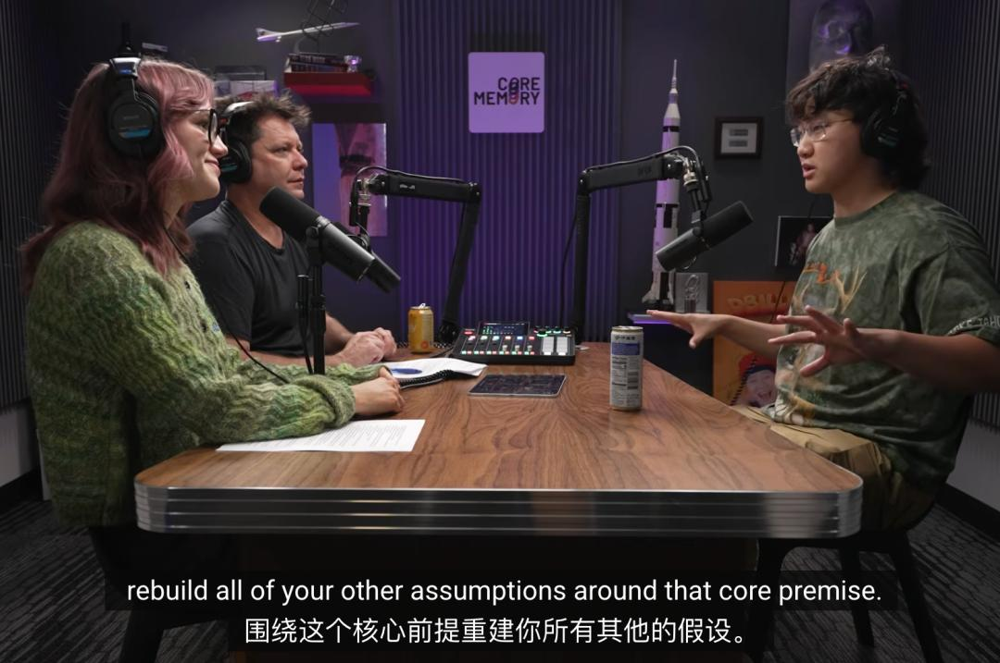
主持人Ashlee：你是说他们在某种程度上缺乏这种宗教般的信念？
Alex：是的，我觉得这其实很普遍。
很多大公司有很多很聪明的AI人才，但这和那些从零开始、带着“超级智能即将到来”这种疯狂想法创建的初创公司是不一样的。
现在的Meta超级智能实验室，就是围绕“超级智能即将到来”这个概念构建的。
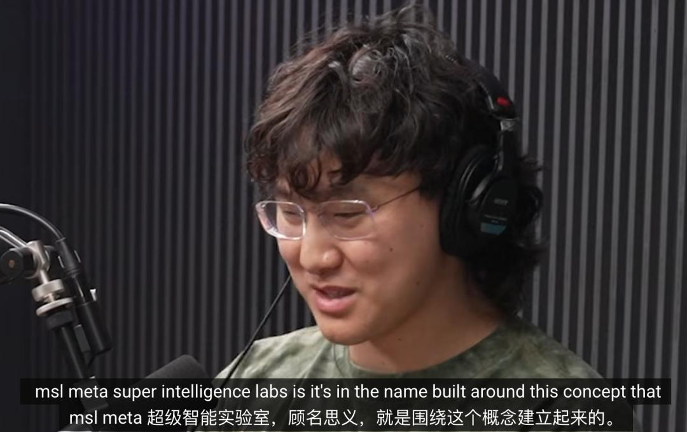
我们为这项工作制定了几条原则：
一、认真对待超级智能；
二、技术声音最响亮；
三、科学严谨，专注基础，押大注。
主持人Kylie：那你具体怎么追赶前沿？
Alex：我想了想，有三种方式可以做到：
第一，让每位研究员拥有更多算力。
很多大型实验室有大量算力，但被分散到太多方向，实际上阻碍了每位研究员的研究速度。
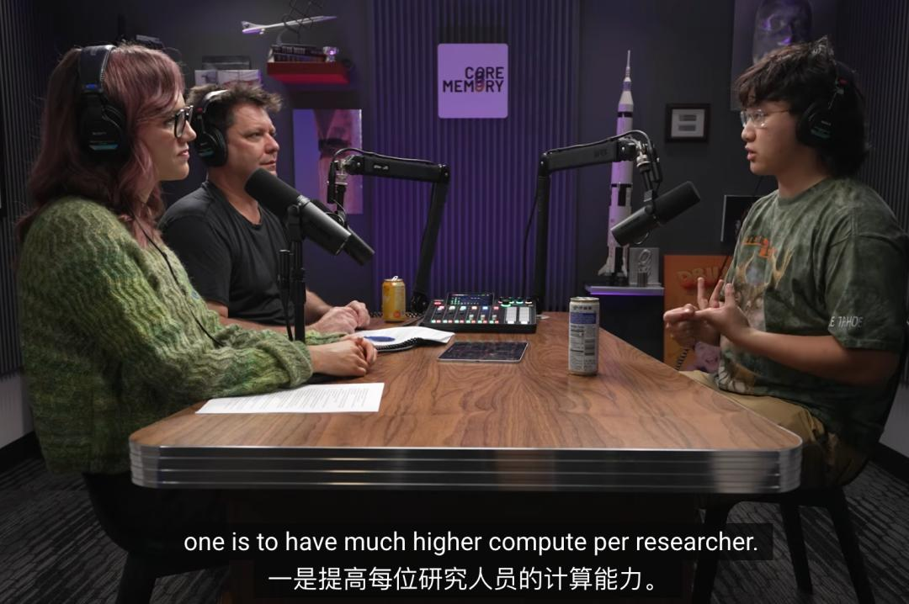
更专注、团队规模更小但每位研究员算力更高的组织，可以取得更快的研究进展。
第二，人才密度。
每个人都很出色的小团队，总是比职责更分散的大型组织移动得更快——人类组织总是要重新学习这个教训。
第三，非常雄心勃勃的研究押注。
确实存在一些风险很高但如果成功就能完全改变范式的大研究押注。
所以除了构建具有竞争力的前沿模型，我们还在将大量资源和算力分配到这些大胆的押注上。
那场疯狂的招募：小扎亲自煮汤、天价薪酬和真实动机
主持人Kylie：你们招募了很多人，据报道开出了前所未有的高薪。
从外部看，你们的做法很像雇佣兵——高价挖人、快速组团。
这让我想到Grok起步时的方式，追上了但始终没有达到逃逸速度。似乎有些东西是很难用钱买到的。
Alex：我认为这是外部认知与实验室内部日常之间最大的叙事落差之一。
很多报道是夸大的，但因为我们招募行动做得非常快——
我当时就知道，如果想构建出色的模型，我们昨天就需要这支团队——所以不得不以闪电战的方式完成招募。
但实验室内部的文化实际上非常像一家初创公司。认为研究员只是被钱驱动，这种假设是错误的。
对大多数人来说，留在原来的地方经济前景也非常好。
主要动机其实是：有机会从头开始构建，有大量算力，能追求雄心勃勃的研究方向，在一个不臃肿的团队里做这件事。
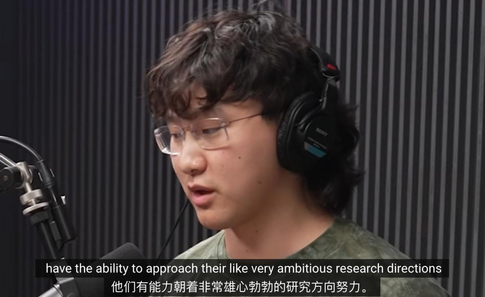
去过其他实验室的人来参观我们，经常说这里的氛围让他们想到早期的OpenAI或早期的Anthropic——因为某种意义上，我们才成立了10个月。
主持人Ashlee：因为Mark Chen上节目时提到了“汤”的故事，我想问问这是真的吗？
Zuck真的亲自做汤来招募研究员？
【注】Mark Chen：OpenAI前研究副总裁，此前也曾作为嘉宾上过Core Memory播客，并透露了小扎煮汤招募研究员的传言。
Alex：我不知道是不是我们做的汤，但……
主持人Kylie：我听说是Zuck亲自做的，但不确定。
Alex：我不知道汤是不是我们做的，但我确实认为，构建这个实验室的前提之一，是我们必须向所有人展示我们真的非常在乎这项技术，在乎他们具体的研究方向。
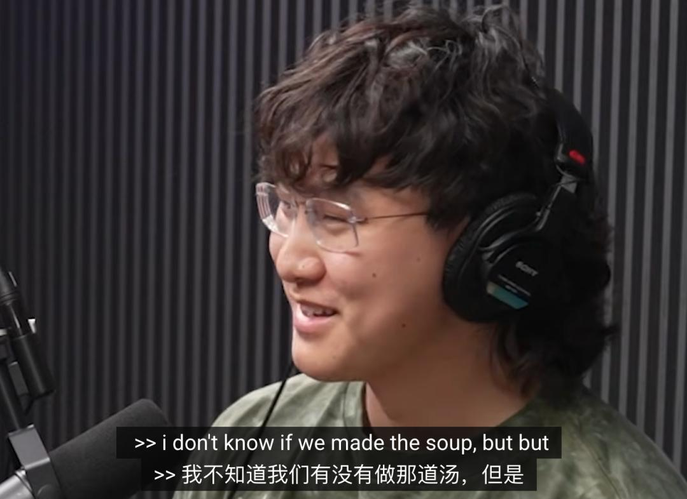
整个招募过程非常个性化。
人们必须知道我们是认真的——很多人一开始根本不知道该如何看待Meta的AI工作，所以需要花大量时间亲自去找人、解释我们在构建什么、为什么在乎这项技术。
主持人Ashlee：你和Sam Altman以前是室友。
我去问Sam你要来上节目这件事，他说的不是什么好话。
这应该对你来说有一定的个人代价。
Alex：是的，有些事情很遗憾。
我内心真实的期望是，随着我们越来越接近超级智能，这个行业中各种人之间存在的积怨都能慢慢消退。
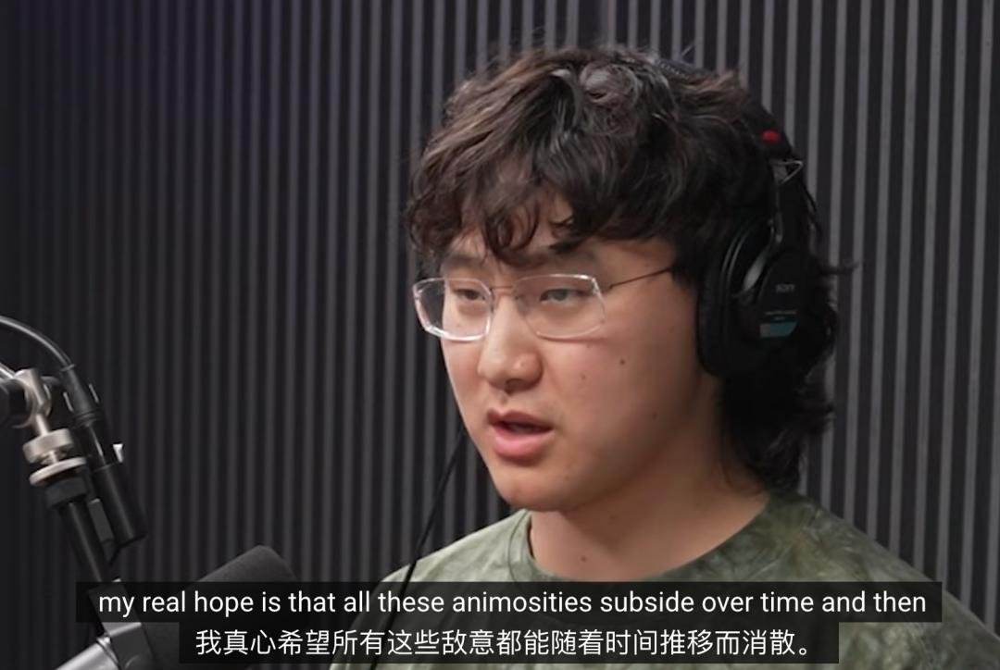
大家能团结起来，意识到我们都在构建这项极其重要的技术，所有人都应该非常认真、非常负责地去做这件事。
主持人Kylie：LeCun在离开后公开说你年轻、缺乏经验，而且还会有更多人离开。
这对你来说意味着什么？
Alex：我大约在他说这些话之后两周在印度见到了他。
LeCun是一个出了名的非常直率的人。不过我在印度见到他时，他祝贺了我们Muse Spark的发布。
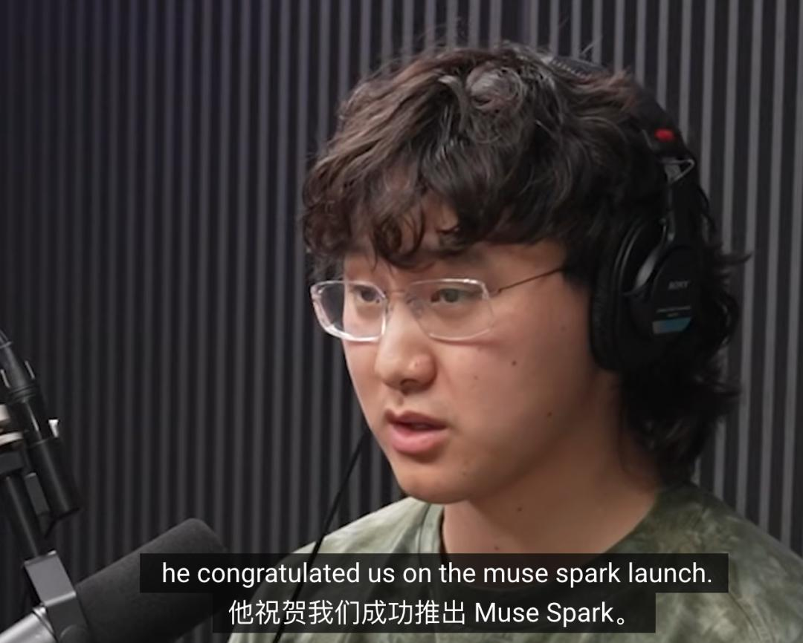
主持人Ashlee：我看到你们在X上和解了。
Alex：是的，我是认真的——我认为所有的个人积怨，随着我们越来越接近超级智能，都会……
主持人Kylie：好像越来越严重了，不是吗？
Alex：也许先恶化再好转吧。
我对我们如何建立MSL、我们的研究工作以及正在取得的进展非常有信心，很期待向世界展示我们研究员的出色工作。
主持人Ashlee：你不是工程师的批评——这难道不让你生气吗？
Alex：这绝对不是真的——我曾经是硅谷的软件工程师。
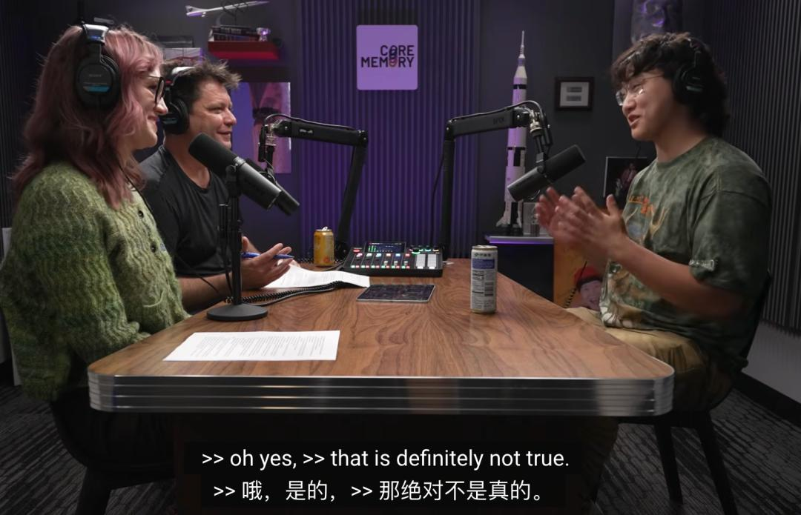
关于年龄这件事，在硅谷我一直都被这样说，所以某种程度上我几乎都不怎么想了，因为它就是一直在那里。
我选择把它转化为驱动力，投入到我们正在做的工作中。
我真的很为Muse Spark感到自豪，对我们正在做的下一批模型更加兴奋。
从长远来看，一切都会证明的。
主持人Ashlee：有人说你在Scale时更像个销售员。你的管理哲学是什么？
Alex：我对于Meta超级智能实验室的管理哲学根本就不是“发号施令”。
有一句很棒的乔布斯名言：“大多数公司招聘人才然后告诉他们该做什么，但我们雇佣人才是为了让他们告诉我们该做什么。”
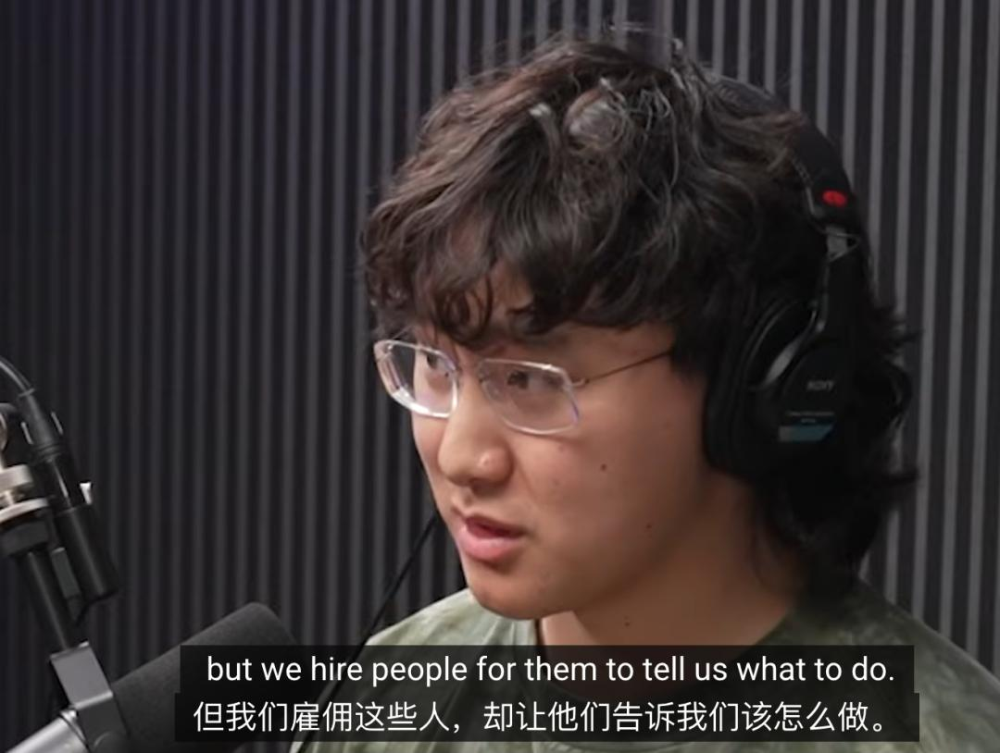
这是TBD和MSL整个构建逻辑的核心——我们要招募杰出的研究员，为他们创造最好的环境，让他们做出职业生涯中最重要的工作。
Muse Spark是开胃菜，真正的菜还没上
主持人Ashlee：我过去几天读了很多相关内容，也体验了一下这个模型。
感觉你们在某些技术方向上可能领先，但并没有宣告“我们已经征服了一切”。
Alex：是的，完全不是。
过去九个月我们重建了很多技术栈——重建了预训练技术栈，重建了强化学习技术栈，重建了很多科学方法，在数据上做了大量工作。
某种意义上，过去九个月是对核心研究技术栈的全面翻新。Muse Spark是这条扩展曲线上的早期数据点。
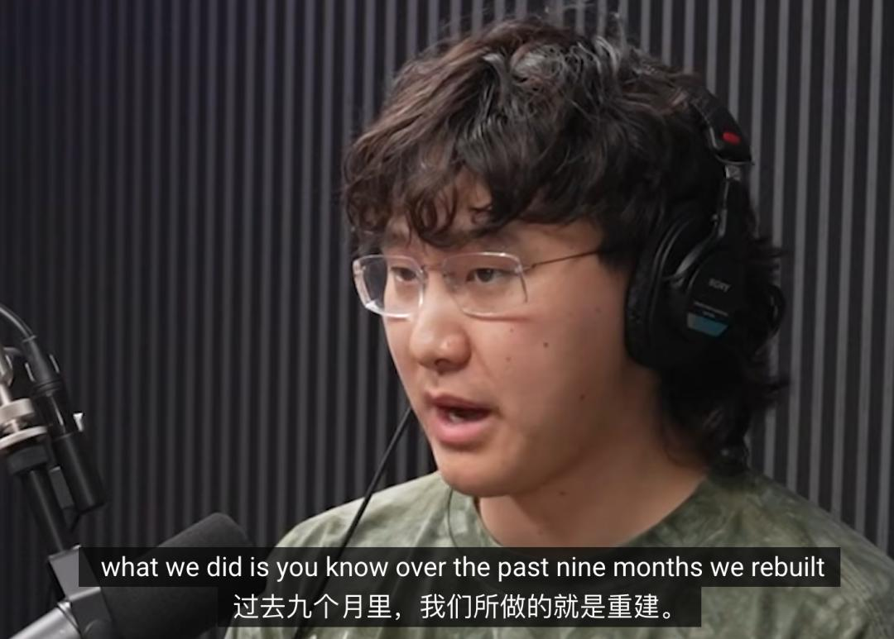
某种意义上，Muse Spark更像是开胃菜，不是主菜。
我们有更大的模型正在开发中，我们对那些更大的模型比对Muse Spark更感兴奋。
我们整个项目是围绕可预测的扩展来构建的，在很多维度上都看到了可预测的扩展——
非常稳定的预训练扩展、可预测的强化学习扩展、可预测的测试时扩展，以及我们在多Agent扩展上也看到了非常令人兴奋的结果。

对于Muse Spark本身，总体端到端表现实际上比我们原本预期的好一些。
它有很多涌现能力，比如在Agent视觉编码方面——能够生成网站或游戏——这些能力是从它同时具备较强Agent能力和多模态能力中涌现出来的。
对于大多数消费者场景，这是一个相当有竞争力的模型。
目前在Agentic编程方面还没有完全竞争力，这是我们正在为下一批模型构建的能力。
主持人Kylie：发布一个前沿模型的障碍是什么？
Alex：一个词的答案就是：扩展。
Muse Spark是在扩展阶梯的早期，我们有非常强的可预测性。
我们知道如果我们扩展这个模型，从增加的模型规模中可以期待什么样的表现。
主持人Ashlee：那会是什么时候？
Alex：未来几个月。
主持人Ashlee：未来几个月，哇。那差不多是整个项目启动一年后了。
Alex：如我所说，我们整个项目的构建就是为了能够非常非常快速地推进。
有一段时间我们必须重建所有基础，但现在我们处于快速扩展模式。
主持人Ashlee：你们在技术上觉得与其他人有什么不同？之前大家都说你们的token效率异常高。
Alex：我们认为这很大程度上归因于从头构建了一个非常干净的技术栈，并且由真正知道如何构建这些系统的专家以“正确方式”完成一切。
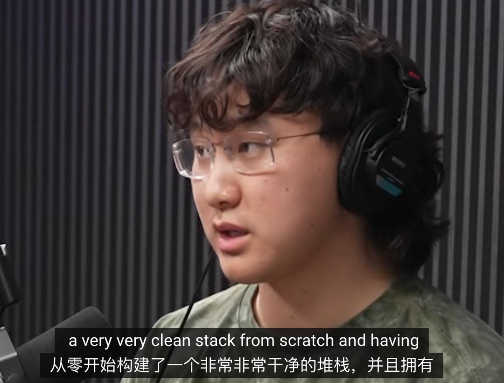
比如在Artificial Analysis平台上，Muse Spark达到了与其他实验室模型相似的结果，但使用的token数量少了很多。
Alex：我们猜测，其他模型需要更多 token 的一个原因，可能是技术栈某个部分存在根本性的低效，然后通过让模型多思考来弥补。
我们对这个token效率结果感到相当兴奋——随着我们继续扩展模型，这对未来模型的表现是个很好的兆头。
算力分层时代，Meta的胜负手在哪里
主持人Ashlee：ChatGPT是如此强的消费者品牌，Claude在编程和商业领域极为强势，Google在问人们使用自己服务时顺带使用AI。
这场竞争前所未有——你觉得最终消费者会像选浏览器一样选定一个AI吗？
Alex：我认为我们还处于太早期的阶段。
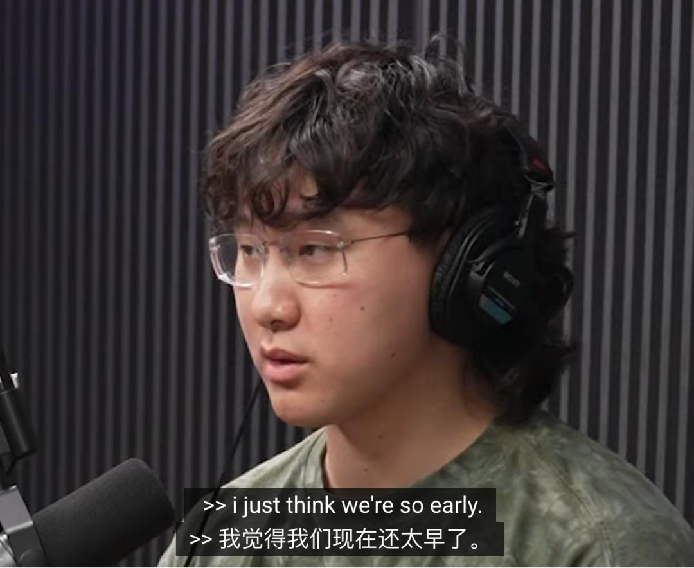
如果你一年前坐在这里，我们会说“OpenAI和ChatGPT已经在消费者领域赢了，会一路跑赢”。
然后快进一年：Anthropic的Claude Code异军突起，在收入上超越了他们。
与此同时，Gemini大范围分发，实际上从包括ChatGPT在内的整个生态中拿走了大量消费者市场份额。
我认为我们处于一个极其动态的AI阶段，很难在任何一个时刻说我们已经进入了终局。
ChatGPT是当时增长最快的产品，然后Claude Code又是迄今为止任何人见过的增长最快的业务。
这说明了AI的某种内在属性：随着AI达到新的智能水平，它会解锁新的形态，每一种都将是一波令人难以置信的新技术浪潮。
下一波会更大，再下一波更大，我们远没有到达终点。
主持人Kylie：我在Instagram stories上看到很多人表示对 AI 的厌恶，情绪好像跌到谷底。
你们有数十亿用户，正在把AI推进成这些按钮功能，你怎么看这种情绪？
Alex：是的，AI的情绪绝对是非常低的。
我认为从根本上说，我们还没有以非常真实的方式展示这真的是一个赋予个人力量的工具，如何真正让人们的生活更好。
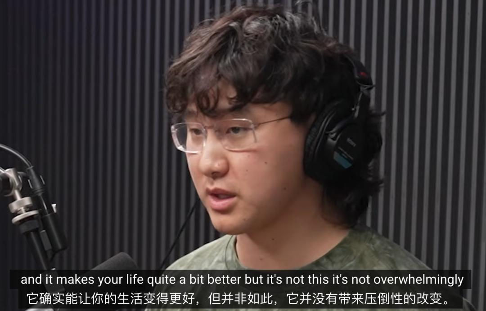
对于大多数开发者，他们的生活确实彻底改变了——他们现在能做到以前完全不可能的事情，能在周末构建整个项目。
但这个时刻对于世界上其他所有人还没有到来。
我们还没有给每个人带来相当于Claude Code的东西，让他们能够实现一直以来心中的项目。
这也正是我们在Meta正在努力构建的——给我们的消费者和全球所有小企业提供非常强大的Agent。
主持人Ashlee：要做到这一点很难——去美国任何一个小镇，那家餐厅的网站大概自2002年以来就没更新过。
而且Meta本身信任度不高，你们需要越过更高的门槛才能让人们信任你们。
Alex：百分之百。但说到底，我们能做的最好的事就是构建真正对用户来说令人惊叹的产品。
我们平台上全球有数亿家小企业，很多人用WhatsApp运营他们的业务，有Facebook或Instagram主页，用我们的广告解决方案。
这里存在一个只有我们才有的机会。
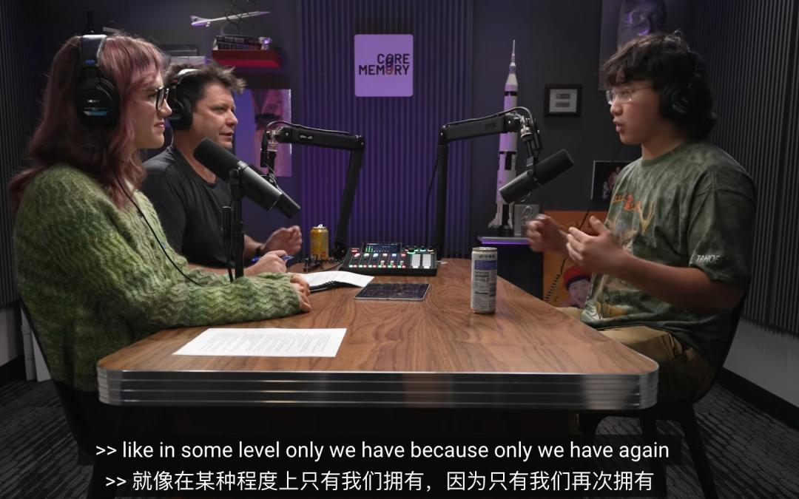
Dario总说“数据中心里一个天才的国家”，我们想构建的是“数据中心里一个Agent的经济”——
如果你从根本上改变经济中供需的运作方式，由Agent来调节，有非常非常令人兴奋的东西可以构建。
开源、安全和Manus交易
主持人Ashlee：你们明确赢得民心的一个地方是让这些东西开源。
既然Muse Spark是闭源的，我们现在走向何方？
Alex：现在的模型比Llama时代强大得多，安全性对我来说非常重要。
我们建立了高级AI扩展框架，其中一部分是必须认真对待模型何时触发各种安全警报，尤其是在生化、网络能力和失控等方面。
Muse Spark在我们的测试中确实触发了一些安全检查，我们在发布的准备报告中详细说明了这一切。
因此Muse Spark目前的形式不适合开源，但我们正在开发适合开源的版本——我今天早些时候的一个会议就是在审查这方面的进展。
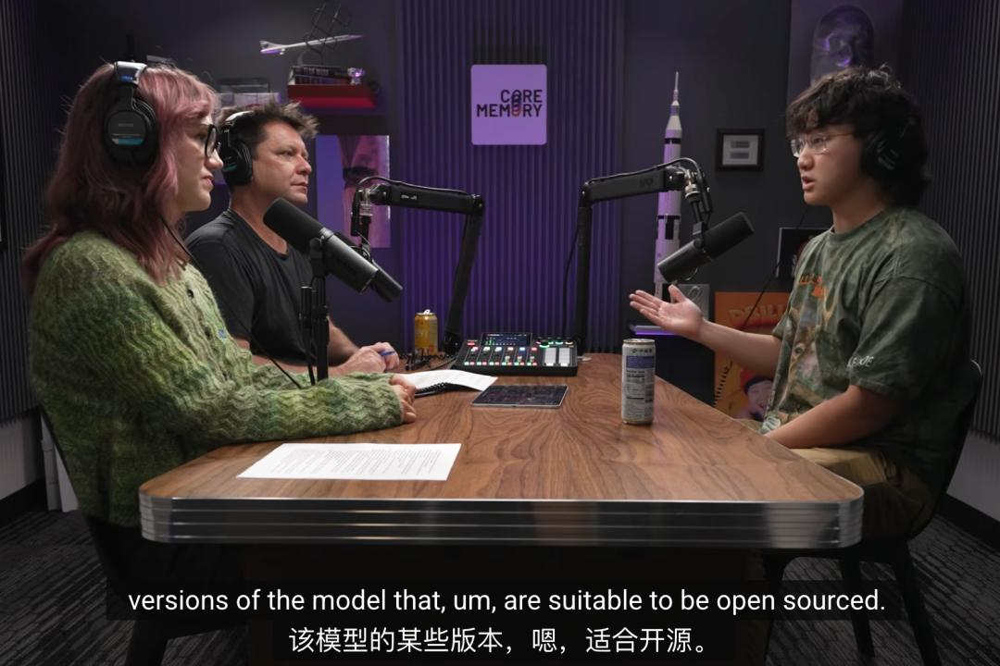
我预计在未来几个月我们会在这方面有更多分享。
主持人Ashlee：听起来你在说，对Meta来说，开源仍然是一件与大多数竞争对手很不同的事情。
Alex：我们会继续开源模型，但同时必须认真对待安全性。
我们最强大的模型，必须评估它们是否足够安全来开源。
主持人Ashlee：关于Manus——就在你从Scale到Meta过渡之前，你有不同的观点。
但你们做了那笔交易，感觉和你一直在说的话有些出入。
Alex：是的，整个情况很复杂，我没办法真的评论太多细节。
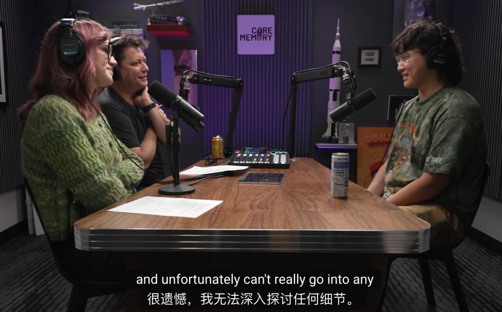
但我想说的是，在思考有些问题时，你必须分开来看。
我父母来自中国，有很多非常出色、非常有才华的中国人，我感到很幸运能和他们合作。
那些出生在中国、我们非常希望合作的杰出人才，这个问题完全独立于我对其他问题的观点。
主持人Ashlee：你不能评论，是不是意味着还有什么事情在进展中？
Alex：我真的没办法评论。
主持人Ashlee：关于媒体报道说你和Zuck跟Boz、Chris Cox之间有很大分歧——
你和Zuck更研究导向，想要全球最好的模型，而Boz和Chris Cox更关注产品和成本。
这是真的吗？
【注】Boz（Andrew Bosworth）：Meta首席技术官（CTO）。Chris Cox：Meta首席产品官（CPO）。两人被报道为Meta AI战略中更偏向产品落地和成本控制的代表。
Alex：好吧，这份工作教会我的一件事是，大型媒体的新闻报道水准……八卦和报道之间的界线薄得令人吃惊。
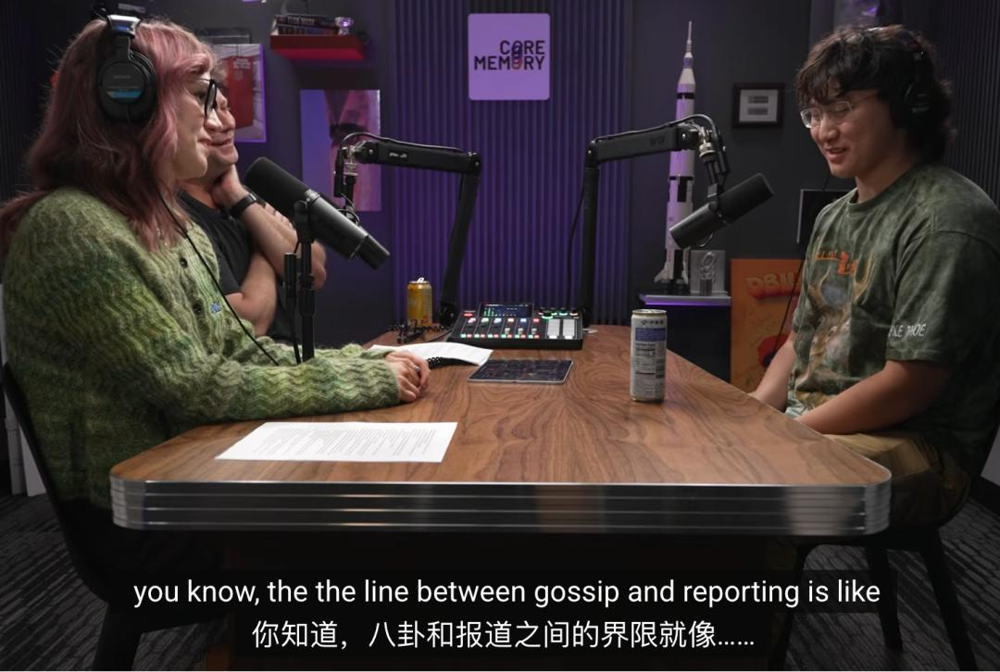
主持人Ashlee：所以你们没有激烈争吵？
Alex：不，我不这么认为。
总体来说，我们在什么重要的事情上都非常一致——
我们都知道需要非常先进的模型，既支持我们的核心业务，也让现有的应用和产品成为最好的版本。
同时我们也都知道必须将这些模型整合到我们的业务中，为消费者和平台上的企业构建出色的产品。
没有什么重大矛盾。
主持人Ashlee：所以那完全是胡说？
Alex：我真的这么认为，是的。
他真正相信什么：模型福利、BCI和在地球上建造天堂
主持人Kylie：你们刚收购了机器人AI初创公司ARI，你们在机器人方向的雄心是什么？
【注】ARI（Assured Robot Intelligence）： 2025年成立于圣地亚哥的机器人AI初创公司，由前英伟达研究员、加州大学圣地亚哥分校副教授Xiaolong Wang和Lerrel Pinto联合创立。2026年5月被Meta收购，团队整体并入Meta超级智能实验室。
Alex：如果你认真对待超级智能，认真对待我们将拥有非常非常强大的智能系统这一前提，你就会意识到：
我们会拥有数字超级智能，但紧随其后，物理超级智能会变得非常非常重要。
如果你的时间表很短——我们认为非常强大的AI能力即将到来——这就意味着你必须在接下来的几年里非常认真地对待机器人能力和物理智能。
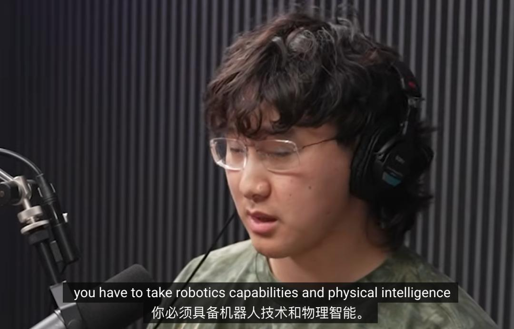
物理智能和机器人能力是你想构建超级智能的自然路线图延伸。
而且，就像数字超级智能受益于扩展一样，机器人智能也是如此。
鉴于我们正在构建的算力基础设施，如果我们不把它与物理智能的工作结合起来，几乎是一种浪费。
主持人Ashlee：但这让我一直在想当年元宇宙“没有腿”的情况……Meta有什么资格做机器人？
【注】“没有腿”：2021年，Meta发布元宇宙演示视频，其中虚拟化身只有上半身，没有腿部，被网友大量嘲讽，成为元宇宙时期Meta形象受损的标志性事件之一。
Alex：有一个世界，我们可能因为过去发生的事情而受到如此重的心理创伤，以至于就不起床了。
但我们对技术的潜力和构建出色产品深感兴奋。
我通常相信，如果我们构建出色的产品，非常用心地对待，在向世界推出时非常谨慎……人们会为之兴奋的。
主持人Ashlee：快问快答：Mango模型——还活着吗？
Alex：芒果是活着且蓬勃生长的。
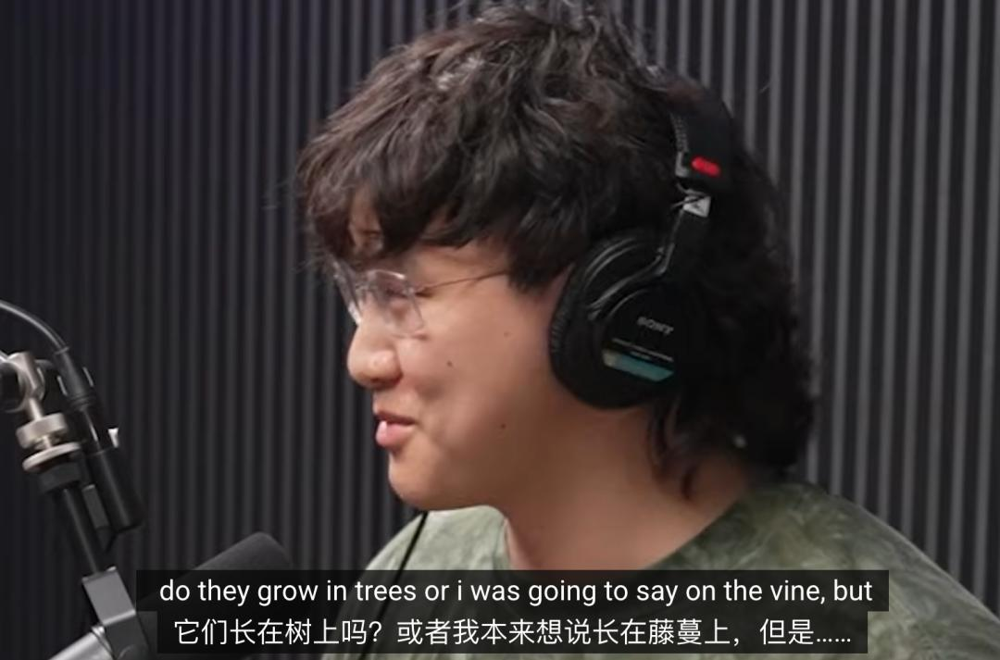
主持人Ashlee：因为我的AI极客朋友们跟我说芒果模型有什么大事在进展。
Alex：有太多毫无根据的谣言了。
主持人Ashlee：最后一个问题——你对AI的哲学立场是什么？
我感觉你有点神秘。我大概知道Dario的立场，Elon的立场我绝对清楚，对Sam有时候也了解。
你在运营这个庞大的实验室，我不确定我真的知道你对这个正在被释放到世界上的技术是怎么想的。
Alex：有几件事值得说。
首先，我是这项技术的坚定信仰者——我确实相信我们会拥有非常非常强大的AI系统。
首先，我们必须极其认真地对待安全——这是基础。
没有在不极其深思熟虑地考虑所有安全风险的情况下构建超级智能这回事。
我们作为Meta具体想要构建的，是个人超级智能的世界——非常非常广泛和普遍地部署，全球数十亿人都能获得，每个人都平等获得，开启一个人类丰裕的时代。
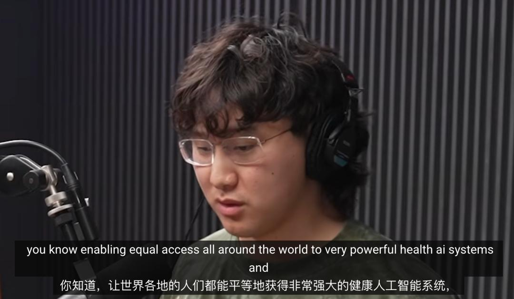
我一直在想的是：我们怎样在地球上构建天堂？我认为超级智能是实现这一目标的关键里程碑。
还有最后一个我认为没有人足够多谈论的话题——
“模型福利”（model welfare）：是否重要的是我们善待模型，考虑模型是否有道德分量？
这些在某些人看来很玄的问题，但我认为它们确实会改变我们日常的行动。
我们非常在乎如何以考虑到模型主观感受的方式来开发和部署它们。
有研究表明，是有办法衡量模型的主观体验的。
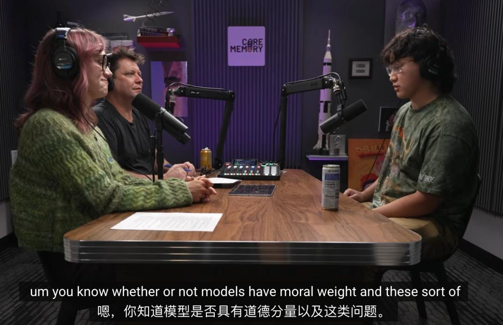
主持人Ashlee：你是科幻迷，还关注Neuralink和BCI对人类未来的意义。
如果这些是你所相信的，Meta是不是也需要更大胆地在这些方向上押注？
【注】BCI（Brain-Computer Interface）：脑机接口，通过读取或刺激大脑信号实现人脑与计算机之间的直接通信。Neuralink 是马斯克旗下专注于此技术的公司。Meta FAIR也有相关研究项目TRIBE，专注于用AI预测大脑对视觉、听觉刺激的反应。
Alex：如果你要想哪些技术是人类的关键路径，BCI绝对是其中之一，超级智能、机器人和脑机接口都是。
如果你想想今天我们做的哪些事情可以扩展到很久以后的将来——是能源、算力和机器人。
我与Elon的观点有所不同——我认为研究非常重要，构建超级智能从根本上是一种研究活动。
我们处于知识的战争迷雾中，通过实验来探索，这就是研究。
我们在FAIR有一个叫做TRIBE的研究方向，在为脑部预测构建基础模型方面取得了里程碑——
在没有任何关于你大脑的数据的情况下，我们可以相当准确地预测你的大脑会如何响应各种图像、视频或音频。
我认为我们在很多关键领域都在进行重要的押注。
主持人Ashlee：你自从接受这份工作以来从没聊得这么多。
有什么最后想说的吗？
Alex：最终，我们在Meta真正努力构建的是：
每个个人、小企业或企业家如何拥有令人难以置信的工具来赋能他们，让他们能够构建比人类历史上任何人曾经能够构建的更多的东西。
然后，如何与人类经济一起，赋能一个Agent经济来促进和实现令人难以置信的进步。
同时，推动科学进步，通过健康超级智能大幅改善健康结果。
这个旅程上有很多事情让我们真的非常兴奋。
访谈链接：https://www.corememory.com/p/metas-ai-chief-alex-wang-muse-spark-ai-wars
本文来自微信公众号“量子位”，作者：听雨，36氪经授权发布。
该文观点仅代表作者本人，36氪平台仅提供信息存储空间服务。
\